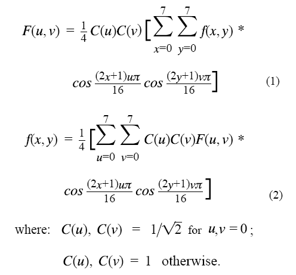
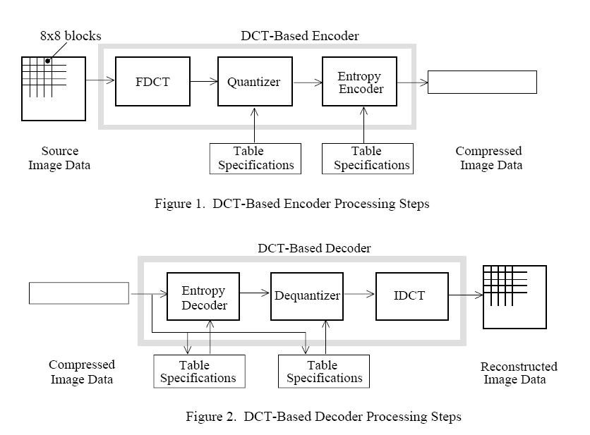
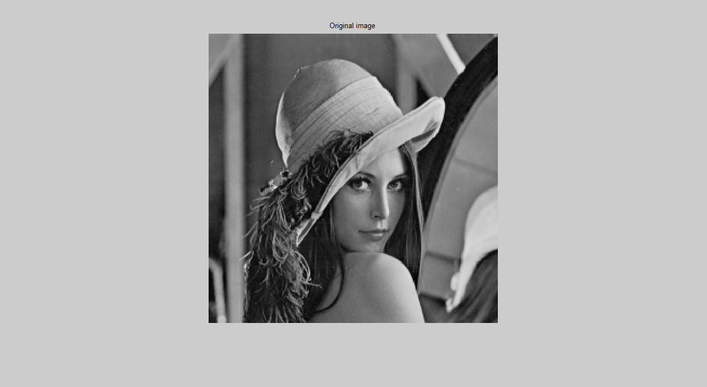

Shankar Jagadeesan
Teaching machines to see and respond

Determination and analysis of Signal to Noise Ratio & Compression Ratio in JPEG Encoding
Theory behind 8*8 FDCT and IDCT
At the input to the encoder, source image samples are grouped into 8x8 blocks, shifted from unsigned integers with range [0, 2P - 1] to signed integers with range [-2P-1, 2P-1-1], and input to the Forward DCT (FDCT). At the output from the decoder, the Inverse DCT (IDCT) outputs 8x8 sample blocks to form the reconstructed image. The following equations are the idealized mathematical definitions of the 8x8 FDCT and 8x8 IDCT:
|  |
{kind=link}
The DCT coefficient values can thus be regarded as the relative amount of the 2D spatial frequencies contained in the 64-point input signal. The coefficient with zero frequency in both dimensions is called the �DC coefficient� and the remaining 63 coefficients are called the �AC coefficients.�� Because sample values typically vary slowly from point to point across an image, the FDCT processing step lays the foundation for achieving data compression by concentrating most of the signal in the lower spatial frequencies. For a typical 8x8 sample block from a typical source image, most of the spatial frequencies have zero or near-zero amplitude and need not be encoded
At the decoder the IDCT reverses this processing step. It takes the 64 DCT coefficients (which at that point have been quantized) and reconstructs a 64-point ouput image signal by summing the basis signals.Mathematically, the DCT is one-to-one mapping for 64-point vectors between the image and the frequencydomains. If the FDCT and IDCT could be computed with perfect accuracy and if the DCT coefficients were not quantized as in the following description, the original 64-point signal could be exactly recovered. In principle, the DCT introduces no loss to the source image samples; it merely transforms them to a domain in which they can be more efficiently encoded
|  |
{kind=link}
Compression & Decompression
The JPEG compression algorithm is widely known to everyone. You can browse the internet and find various pages that explain JPEG coding.The decompression algorithm reverses this process. The decompressor multiplies the reduced coefficients by the quantization table entries to produce approximate DCT coefficients. Since these are only approximate,the reconstructed pixel values are also approximate, but if the design has done what it's supposed to do, the errors won't be highly visible. A high-quality decompressor will typically add some smoothing steps to reduce pixel-to-pixel discontinuities.
The JPEG standard does not specify the exact behavior of compressors and decompressors, so there's some room for creative implementation. In particular, implementations can trade off speed against image quality by choosing more accurate or faster-but-less-accurate approximations to the DCT. Similar tradeoffs exist for the downsampling/upsampling and colorspace conversion steps. The quantization matrices are stored in the file so that approximate values of the DCT coefficients may be recomputed. From here, the (Y, Cb, Cr) vector is found through the Inverse Discrete Cosine Transform. Then the (R, G, B) vector is recovered by inverting the color space transform.
Results
I took a RAW Lena Image (256*256) as input. The output is: Peak Signal to Noise ratio is 32dB and the compression ratio is 4.225. This falls in the normal range of jpeg images. Hence we can infer from the compression ratio that there is not much loss in the recovered image. Normally the Compression ratio is between 10 to 30 for lossy compression and its between 2 to 10 for lossless compression. The emerging JPEG continuous-tone image compression standard is not a panacea that will solve the myriad issues which must be addressed before digital images will be fully integrated within all the applications that will ultimately benefit from them. For example, if two applications cannot exchange uncompressed images because they use incompatible color spaces, aspect ratios, dimensions, etc. then a common compression method will not help.
|  | |
| Original Image | Decompressed Image |
{kind=link}
{kind=link}